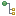
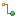
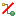

- Dragging a thumbnail from a gallery onto a thumbnail in the Hierarchy view will insert this image into the current hierarchy - the image is "linked" to the target image.
- Edit description. Here you can enter details about the relationship beween two images, for example with which tool and with which recipe the image was derived.
- Unlink. The selected image is removed from the hierarchy.
- Show candidates for Originals/Derivatives. Shows a collection of images with the same original file name and a modification date that is older/younger than that of the selected image.
- Full screen view. This will invoke an external viewer, or the internal viewer if no external viewer is defined. Pressing Shift or another modifier key at the same time will force the internal viewer. The modifier key determines the display modus.
- Edit. This will invoke the default editor associated with the images file type. If several images are selected, an editor will be selected that is associated with all the corresponding file types.
- Edit with. This will allow to select among all editors associated with the image file type. If several images are selected, only editors that are associated with all the corresponding file types are shown.
- Time search. Searches images within the same time window as the selected image. The size of the time window can be specified.
- Search similar. Performs a content based search vor images that are visually similar to the selected image or to a drawing.
- Proximity search. Search images that are in the vincinity of the selected images. A maximum distance can be specified.
- Voicenotes>
- Attach voice note. This will show a dialog allowing you to instantly record a voice note, or to attach an existing sound file as a voice note.
- Remove voice notes. This will remove formerly attached voicenotes. If the voicenote was an instant recording, the sound file will be deleted.
- Play voice notes. This will play the voice note of the selected image.
- Metadata>
- Copy metadata. Copies the meta data of the selected image into the clipboard.
- Paste metadata. Pastes meta data from the clipboard into the selected images. A dialog is shown allowing to select specific meta data.
- Color code. Change the images color code.
- Rating. Change the images rating.
- Rotate clockwise and anti-clockwise. Rotates the thumbnail by 90 or 270 degrees.
- Show folder. Opens the external folder where the image is located and selects this folder in the Catalog view, too.
- Refresh. Updates the catalog entry of the selected images or of a selected collection.
- Delete. Deletes the selected images from the catalog. You may choose to delete the image file from disc as well.
You can access local menu functions by clicking the triangle symbol on the local toolbar.
- Full screen view. This will invoke an external viewer, or the internal viewer if no external viewer is defined. Pressing Shift or another modifier key at the same time will force the internal viewer. The modifier key determines the display modus.
- Edit. This will invoke the default editor associated with the images file type. If several images are selected, an editor will be selected that is associated with all the corresponding file types.
- Edit with. This will allow to select among all editors associated with the image file type. If several images are selected, only editors that are associated with all the corresponding file types are shown.
- Show Originals/Derivatives/Components/Composites.... This function will toggle between the Originals View and the Derivatives View, or the Composites View and the Components View, placing the currently selected image on the top of the hierarchy.
- Show hierarchy for selected image. This will display the hierarchy of the current view (originals, derivatives, composites, or components) for the image currently selected in a gallery.
- Full screen view (
 ). This will invoke an external viewer (see General preferences), or the internal viewer if no external viewer is defined. Pressing Shift while invoking this function will force the internal viewer being invoked.
). This will invoke an external viewer (see General preferences), or the internal viewer if no external viewer is defined. Pressing Shift while invoking this function will force the internal viewer being invoked. - Edit (
 ).
This will invoke the default editor associated with the images file
type. If several images are selected, the editor is only invoked if it supports all the corresponding file types.
).
This will invoke the default editor associated with the images file
type. If several images are selected, the editor is only invoked if it supports all the corresponding file types. - Edit with (
 ).
This will allow to select among all editors associated with the image
file type. If several images are selected, only editors that are
associated with all the corresponding file types are shown.
).
This will allow to select among all editors associated with the image
file type. If several images are selected, only editors that are
associated with all the corresponding file types are shown. - Show Originals () / Derivatives () / Components () / Composites ().... This function will toggle between the Originals View and the Derivatives View, or the Composites View and the Components View, placing the currently selected image on the top of the hierarchy.
- Edit description (
 ).
Here you can enter details about the relationship between two images,
for example with which tool and with which recipe the image was derived. You can also restore archived recipes.
).
Here you can enter details about the relationship between two images,
for example with which tool and with which recipe the image was derived. You can also restore archived recipes.
- Unlink (). The selected image is removed from the hierarchy.
- Double click. This will expand or collapse a node.
- Ctrl+click. This will invoke the Edit description function.
- Enter. Same as Edit context function.
- Shift+Enter. Same as Edit with context function.
- Tab. This will invoke an external viewer, or the internal viewer if no external viewer is defined.
- Tab+Shift. Forces the internal viewer.
- 0,1,2,3,4,5. Rate the selected images with 0,1,2,3,4,5 stars.